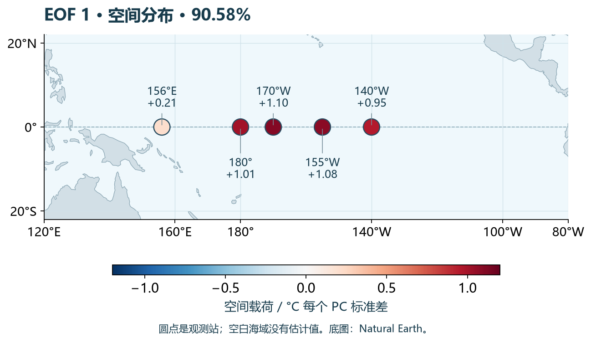
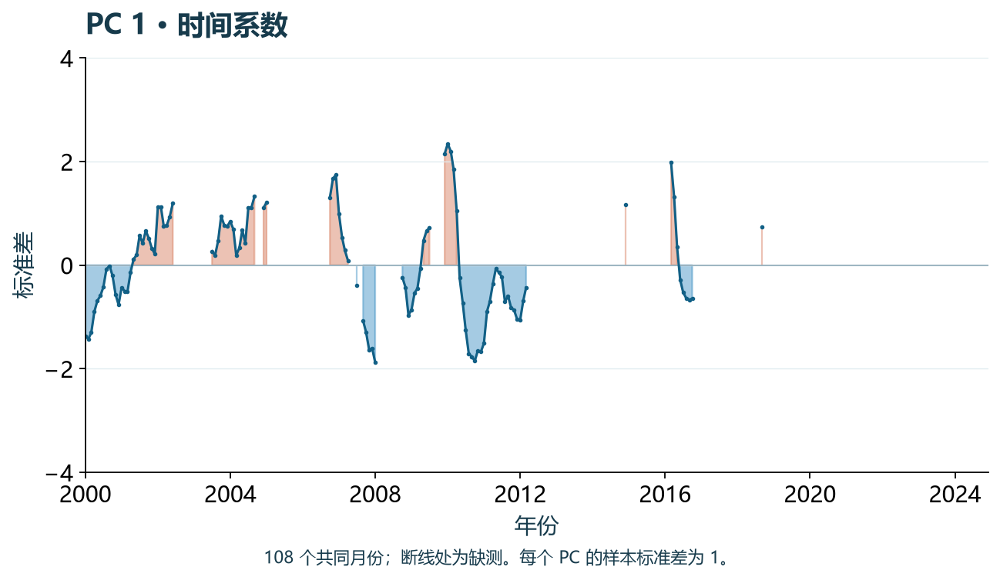
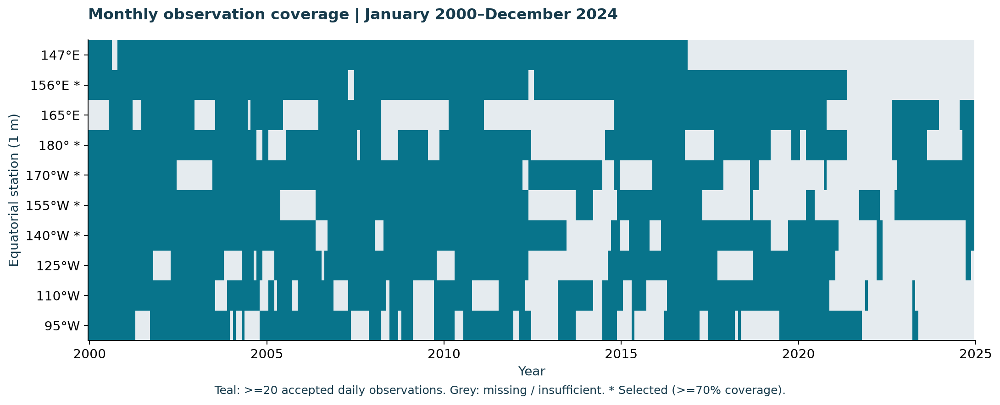
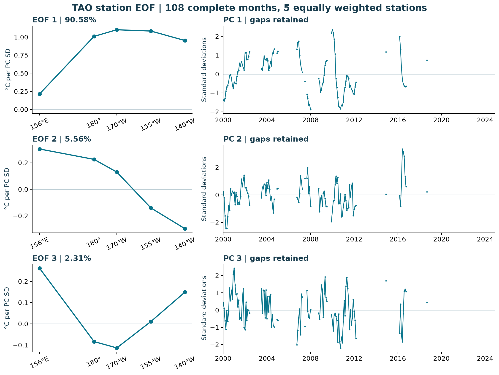
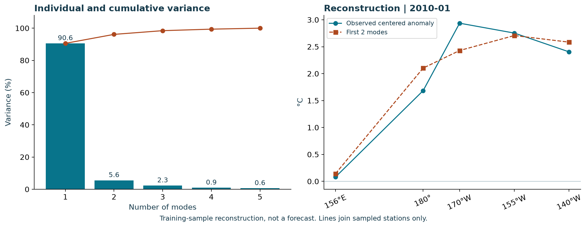

真实海温里的 EOF
找出一起变化的形状。
五支海洋温度计，108 个共同月份。
怎样用少数固定形状，描述它们随时间的起伏？
从零建立直觉，再看公式。这里每一条海温曲线，都来自 NOAA 的真实观测。
NOAA PMEL TAO · 赤道 · 1 米深度 · 下载于 2026-10-14
查询 2000—2024 年；共同月份实际覆盖 2000-01 至 2018-09，期间有缺测。
先看形状，再看它怎样随时间变化。
5 个站点 · 108 个共同月份 · 前两模态累计解释 96.14% 的样本方差




EOF1：五个站点同号变化，中部站点振幅更大。这一模态解释 90.58% 的样本方差。
读图顺序：看圆点颜色和数值 → 看 PC 的正负与大小 → 两者相乘，得到该模态的温度贡献。
这里展示 TAO 站点型 EOF。圆点外的海域没有推算温度；缺测月份在时间曲线上留白。所有模态使用相同色标与 PC 纵轴，便于比较。
动手验证：观测、模态与重建
拖动月份查看实测值；播放会跳过缺测月。PC 横轴按真实时间绘制，缺测处断开。曲线只连接采样站点，不代表连续海域的地图。
查看当前月份的数值
| 站点 | 中心化异常 / °C | 当前模态贡献 / °C | 重建 / °C | 残差 / °C |
|---|
先把 EOF 看成一种“找方向”
经验正交分解（Empirical Orthogonal Functions，EOF）可以理解为：为许多个“海洋的瞬间”，找一套尽量省力的描述方式。
想象赤道上有五支温度计。一个月读五个数，就是一个五维向量；108 个月，就有 108 个点。我们先扣掉每个站点的季节背景，再寻找这片点云伸展得最远的方向。
为什么要找“最宽”的方向？
把每个点垂直投到一根轴上。若投影挤在一起，这根轴丢掉了许多变化；若投影分散，单凭轴上的坐标就能保留更多差异。把轴转一圈，让投影方差最大，这就是第一主成分的方向。
先把五个站点缩成两个来看
以下点云取自同一批真实月份的 180° 和 170°W 站点。两维演示单独求最优轴；它不是五站点 EOF 的全部结果。
\(\text{空间形状}\times\text{时间强度}=\text{一部分变化}\)
最优方向在每个站点上的分量，就是一个固定的空间形状：EOF。每个月沿这个方向的坐标，就是时间系数：PC。PC 为正时沿着这个形状变化；为负时，整幅形状反过来；接近零时，这个模态贡献很小。
用第一模态解释后，剩下的变化里还能找第二个方向，但它必须与第一个方向正交。依次继续，直到五个方向。正交指向量的点积为零，不意味着海洋过程互不影响，也不意味着统计独立。
从数据到公式，每一步都能复现
展开数据处理与完整公式推导
这份示范怎样从原始观测走到矩阵？
下载与质控
读取 87,069 条逐日记录，保留温度有限、质量标记 QT 为 1（最高）或 2（标准）、来源 ST 为 \(1/2/5/6\) 的 63,277 条记录。来源 \(3/7\) 的时间插值记录不纳入；此次实际通过的来源为 1 和 5。
日值变月值
每月至少有 20 个通过质控的观测日，才计算该月日值的算术平均。否则整个月记为缺测。10 个站点都参与覆盖率审计。
按覆盖率选站点
在 2000—2024 年共 300 个月中，保留有效月数不少于 210（70%）的站点：156°E、180°、170°W、155°W、140°W。
减去季节背景
对每个站点，按日历月份计算 2000—2024 年可用月值的平均。某年 1 月减该站的“1 月平均”，而不是全年平均。这是样本季节气候态，不是标准 30 年气候态。
取共同月份，再中心化
只保留五站都不缺测的 108 个月。各列再减去这 108 个月的平均，使矩阵 X 的每列均值严格为零。不填补缺测，不去趋势，不对各站除以标准差。
现在推导：把“最大投影方差”写出来
令 X 的行是月份、列是站点。第一行就是某一个月五站的中心化异常；单位为 °C。我们要找长度为 1 的空间向量 e。
a 是 108 个月在这个方向上的投影。它的样本方差为 \(e^{T}Ce\)。长度约束不能省：否则只要把 e 放大，方差就可以无限增大。
因此选 C 最大特征值对应的特征向量作为 EOF1。之后按特征值从大到小排列。特征值 \(\lambda \) 是对应原始 PC 的方差；除以全部特征值之和，就得到贡献率。
实际计算用 SVD，避免先构造协方差矩阵
E 的每一列是单位长度的 EOF，A 的每一列是单位为 °C 的原始 PC。图中为了方便比较，把 PC 标准化为样本标准差 1，同时把对应尺度移到空间载荷 L 上；乘积仍然完全相同。
图里的 L 是“PC 增加一个标准差时，各站变化多少 °C”。同时把 P 和 L 乘以 −1，重建结果不变。页面提供翻转按钮，让这个性质能直接看见。
只保留前 K 个模态，就得到近似重建。残差是观测 X 减重建值。在这份训练样本、相同站点权重下，前 K 个 SVD 模态使平方重建误差最小。它不是预测。
要恢复原始月温度，还须加回该站日历月气候态和共同样本的残余均值。
先读图，再谈物理意义
这次计算告诉我们什么？
| 模态 | 贡献率 | 累计 |
|---|---|---|
| EOF 1 | 90.58% | 90.58% |
| EOF 2 | 5.56% | 96.14% |
| EOF 3 | 2.31% | 98.45% |
| EOF 4 | 0.94% | 99.39% |
| EOF 5 | 0.61% | 100.00% |
第一模态：共同增暖与降温
EOF1 的五个载荷同号，且中部站点的振幅明显大于 156°E。PC1 为正时，这组站点倾向一起偏暖；为负时一起偏冷。这支持“共同变化占主导”的描述，但不能仅凭一张 EOF 图就把模态命名为 ENSO，或证明变化的原因。
第二模态：不同站点的反向差异
EOF2 西侧为正、东侧为负，描绘第一模态之外的一种东西差异。它只解释 5.56%，解读时要结合时段、观测覆盖和其他变量，不能把每个数学模态都当成独立的物理机制。
稳健性与边界
固定这五个站点，将月门槛改为至少 25 个有效日，留下 105 个共同月份。EOF1 贡献率从 90.58% 变为 90.34%，两个首模态单位向量的绝对点积为 0.99996。这个检验支持对日数门槛的稳定性，却不能消除缺测月份选择、站点选择或气候态基准带来的偏差。
所有站点等权。它们并不是等面积网格，因此贡献率只代表这五个站点、这些月份的温度协方差，不能外推成“整个太平洋 90.58% 的变化”。完整月筛选还会丢掉单站有观测、其他站缺测的月份；时间序列有自相关，也不能把 108 个月当作 108 个独立样本来做显著性推断。
如果改用规则经纬网格的海盆数据，常在分解前乘 \(\sqrt{\cos \varphi }\) 近似面积权重。是否去趋势、是否做相关矩阵 EOF、如何补缺测，都必须先说明；改变这些选择，结果也会改变。
从真实数据生成的图表



下载，重算，再自己验证
完整材料包含 NOAA 原始 CSV、月均数据、季节气候态、中心化异常、PC、空间载荷、方差表、图表和分析脚本。无需账号；网站交互使用相同计算结果，不在浏览器内重新请求 NOAA。
python -m pip install numpy pandas matplotlib
python analyze.py --raw tao-equatorial-1m-2000-2024.csv --out results
python plot_atlas.py --data results --land ne_110m_land.geojson如需重新下载，使用相同命令加 --download，并指定一个尚不存在的原始文件路径。NOAA 会更新历史资料，新的下载可能改变结果；本页图表对应 ZIP 内固定快照，其 SHA-256 记录在 analysis-summary.json。
# X: centered anomalies, shape (108, 5)
U, s, Vt = np.linalg.svd(X, full_matrices=False)
eigenvalues = s**2 / (X.shape[0] - 1)
fraction = eigenvalues / eigenvalues.sum()
PC = U * np.sqrt(X.shape[0] - 1)
loadings = Vt.T * np.sqrt(eigenvalues)
reconstructed = PC[:, :2] @ loadings[:, :2].T小练习：保留全部 5 个模态会怎样？
在重建页把 K 调到 5。观测与重建应重合，残差接近机器舍入误差。再调回 1：比较不同月份误差大小。90.58% 是整份矩阵的方差占比，并不保证每个月都能重建得一样好。
数据与方法来源
- NOAA PMEL / GTMBA：原始温度数据与质量标记
- ERDDAP：查询与 CSV 下载文档
- NumPy：奇异值分解
- eofs：EOF 计算与预处理方法
- NCAR Climate Data Guide：EOF 方法与解释限制
Natural Earth · Public-domain geographic outlines
交互组织参考：蓝色梦想 · Niño3.4 Monitor 的模态—PC—重建联动，以及 海洋课堂笔记 的资料目录与来源呈现。本页使用另行下载的 TAO 站点数据，数值由附带脚本重新计算。